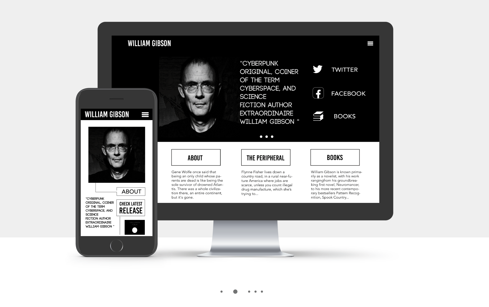
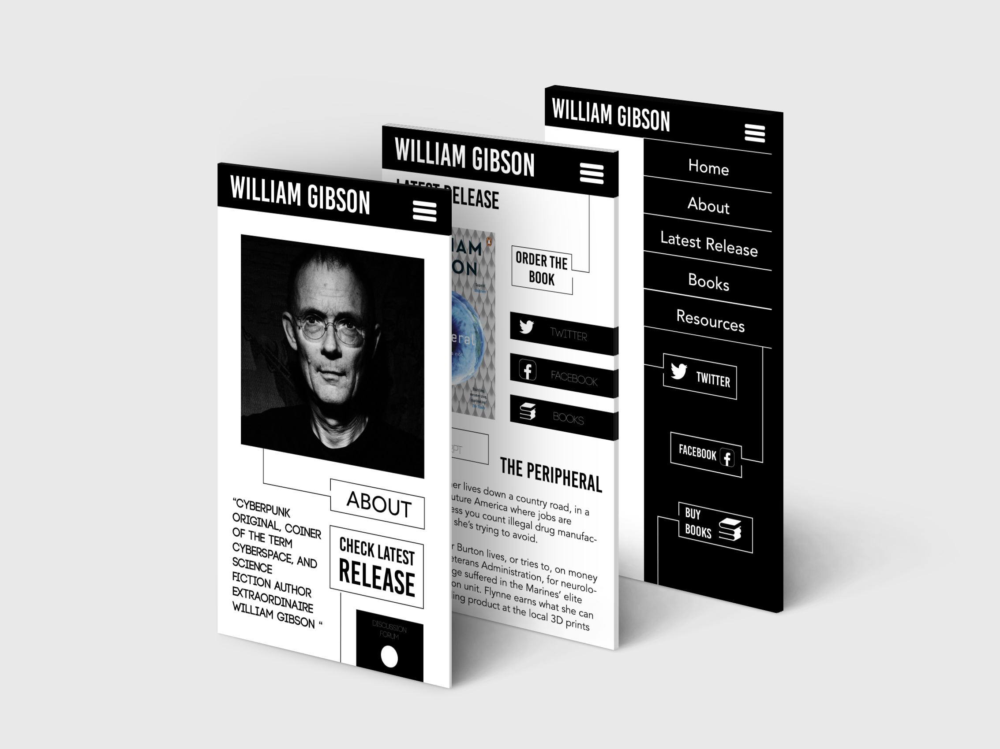
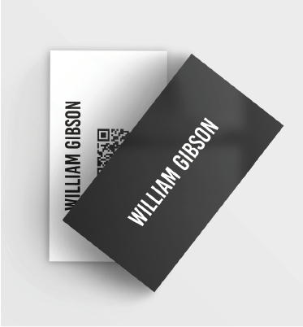

Project Objective
For this project, I was asked to redesign William Gibson’s website. William Gibson is a science fiction author widely known for his novel ‘Neuromancer’ published in 1984. The redesign project required knowledge of HTML and CSS as well as responsive web design.
Concept
The project consists of a desktop and a responsive version for tablets and smartphones of the same websites. I wanted to keep the website as simple and clear as possible. Since the older version looked outdated, I considered that using a black and white design with sans serif text (accompanied with images) would look professional and timeless. The main page contains links to social media, latest books and information about the author.
In addition to the website, I designed a promotional business card with a QR code linked to the website.
Outcome
The outcome is a clean, intuitive and professional-looking website. One of the biggest flaws of the original website was that it was difficult to navigate. I strongly believe the final outcome addresses all of the project requirements and makes navigation easy.
